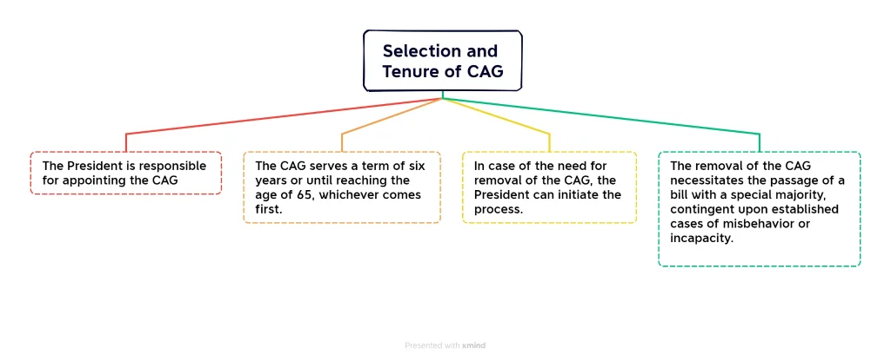
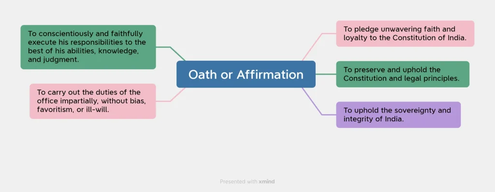
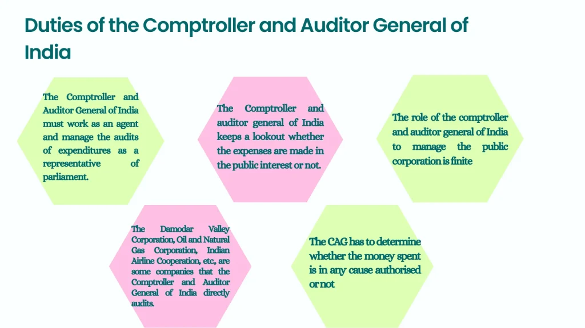
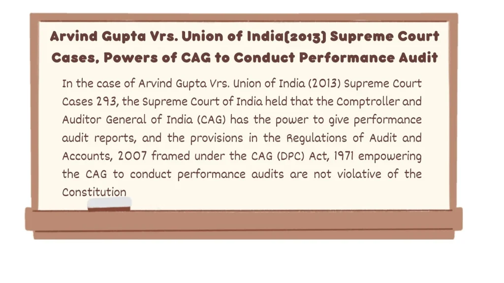
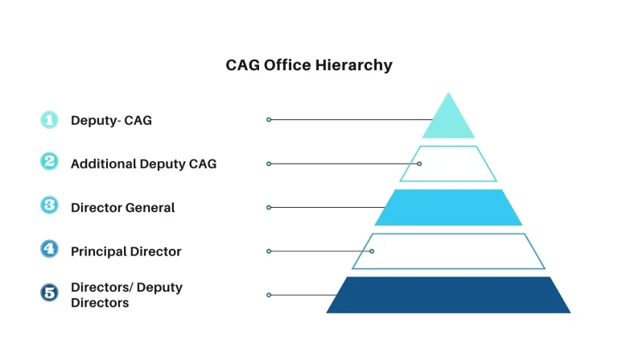
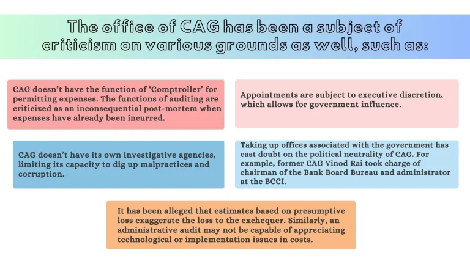
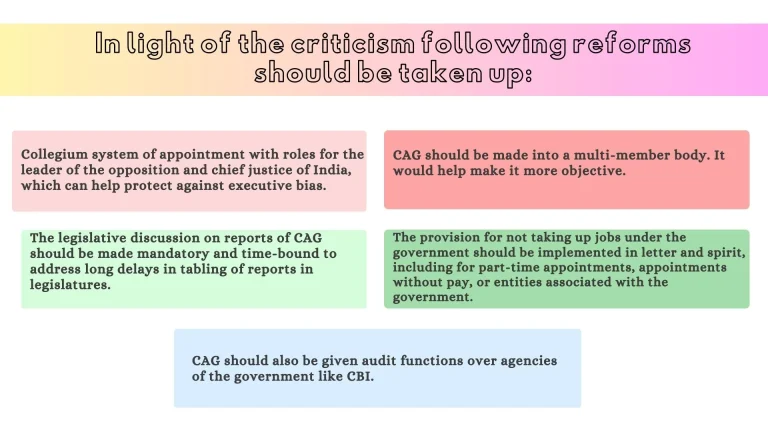

The Comptroller and Auditor General of India (CAG), established under Article 148 of the Indian Constitution, is a constitutional body appointed by the President. CAG plays a crucial role in ensuring accountability by independently auditing government finances, identifying financial irregularities, and issuing audit reports. This institution is essential for overseeing public funds effectively, thereby maintaining transparency and financial integrity within the government.
The Role and Importance of the Comptroller and Auditor General of India
Appointment and Service Conditions of CAG as per Article 148 are as follows:
- Appointment and Removal: The Comptroller and Auditor General of India (CAG) is appointed by the President of India and can be removed from office only in the manner and on the grounds of a Judge of the Supreme Court.
- Oath: The person appointed to this office should take an oath of office before the President or any other person appointed by the office of the President.
- Service Conditions: The salary, service conditions, leaves of absence, pension, and age of retirement are determined by the Parliament of India by law. Until they are so determined, they shall be as specified in the Second Schedule such that the service conditions and salary will not be modified to the disadvantage of the incumbent during their tenure.
- Re-appointment: The CAG is not eligible for any further office either in the Government of India or any State Government after the end of their tenure.
- Power of Parliament: The conditions of service for individuals serving in the Indian Audit and Accounts Department are subject to the provisions of the Constitution and any law made by Parliament. The administrative powers of the Comptroller and Auditor-General shall be determined by rules prescribed by the President. The President must consult with the Comptroller and Auditor-General when making these rules.


Functions of the Comptroller and Auditor General of India (CAG)
Dr. B.R. Ambedkar said, “the CAG will be the most significant officer under the Indian Constitution.”
CAG derives its audit mandate from different sources like:
- Constitution (Articles 148 to 151)
- The Comptroller and Auditor General’s (Duties, Powers, and Conditions of Service) Act, 1971
- Relevant Judicial Pronouncements and Observations
- Regulations on Audit & Accounts-2007
Audit of Accounts Related to Expenditure:
- Consolidated Fund of India
- Consolidated Fund of each State and Union Territory having a Legislative Assembly.
- Contingency Fund of India
- Public Account of India
- Contingency Fund and Public Account of each State
- Audit of stocks and stores: As well as government inventory to ensure that no pilferages have taken place from it.
- Compliance: Ensuring compliance with rules and procedures; effective check on assessment, collection, and proper allocation of revenue.
- Financed Bodies: Audit of bodies and authorities substantially financed from Central or State Revenues, Government Companies, and other Corporations/Bodies as required by related Laws.
- PAC Assistance: Assists the Public Accounts Committee in financial matters; vital role in ensuring accountability and transparency.
- Account Formats: Advise the President on prescribing the form in which the accounts of the Union and the States shall be kept (Article 150).
- Finance Commission: Assists the Finance Commission in arriving at a fair understanding of the actual financial position of the states.
- State Accounts: Compilation and maintenance of accounts of State Governments to ensure accurate and reliable records.
Knowledge Box
Until 1976, the Comptroller and Auditor General (CAG) in India had a dual role of auditing government accounts and also preparing and compiling them. In 1976, a Departmentalization of Accounts scheme was introduced, delegating the responsibility of account preparation and compilation to specific ministries or departments. This change meant that the CAG focused exclusively on auditing these accounts. Consequently, this restructuring led to the establishment of the Indian Civil Accounts Service (ICAS) and the formation of a new office known as the Controller General of Accounts (CGA) under the Ministry of Finance.
Duties and Power of Comptroller and Auditor General Of India
Article 149 of the Constitution of India mentions the duties and powers of the Comptroller and Auditor General of India.

DPC ACT 1971: The Comptroller and Auditor General (Duties, Powers, and Conditions of Service)
The CAG DPC Act 1971 is an act of Parliament that regulates the duties and powers. The act’s main provisions are as follows:
- Form and Manner: Defines the form and manner of keeping and auditing the accounts of the Union and the States.
- Receipts and Expenditures: Empowers CAG to audit receipts and expenditures of the Union/States and any authority or body financed by them.
- Audit at Request: Empowers audit of any body or authority at the request of the President, the Governor, or the State Legislature.
- Local Bodies: Empowers the CAG to prescribe and audit the accounts of local bodies, such as Panchayats and Municipalities.
- Audit Reports: Submission of audit reports to the President or Governor, to be laid before Parliament or State Legislature.
- Salary: Equal to a Supreme Court Judge. If they had a pre-existing pension, the salary is reduced by the pension amount or its commuted value.
- Tenure: Term is six years, but if they turn sixty-five before completion, they must vacate office. He can resign with written notice to the President.
- Leave: Leave is granted to those in prior government service following relevant rules; President has the authority to grant or deny.
- Pension: Deemed retired from prior service upon assuming the role; however, service as CAG counts toward pensionable service in their prior category.

Office of the Comptroller and Auditor General of India
The CAG leads the Indian Audit and Accounts Department (IAAD). He is assisted by:
- Five Deputy Comptroller and Auditors General (The Chairperson of the Audit Board is one of the Deputies).
- Four Additional Deputy Comptroller and Auditors General of India are below the Deputy CAG.
This office’s hierarchy is as follows:

Issues and Reforms Related to the Office of CAG


Recent Update
Girish Chandra Murmu was appointed the next Comptroller and Auditor General of India on August 7, 2020. He was formerly the lieutenant governor of the Jammu and Kashmir Union Territory.
He has been reappointed as the head of the United Nations Panel of External Auditors for 2021. The CAG is now the external auditor for the World Health Organization (2020-2023), the Food and Agriculture Organization (2020-2025), and the Inter-Parliamentary Union (2020-2022).
CAG and Public Accounts Committee
The Comptroller and Auditor General (CAG) of India assists the Public Accounts Committee (PAC) by auditing government receipts and expenditures and providing reports. The CAG’s reports help the PAC examine public expenditures, ensuring financial accountability and transparency. The committee uses the audit findings to hold respective departments accountable, questioning inefficiencies and financial irregularities and strengthening public finances’ oversight mechanism.
Conclusion
The CAG serves as a critical constitutional check on government operations, ensuring financial accountability and transparency. However, an overzealous audit has also been linked with the issue of policy paralysis through fear of the 3Cs (CBI-CVC-CAG). Therefore, reforms aimed at promoting institutional independence and political neutrality are necessary to balance effective oversight with a conducive policy environment.
Constitutional Provisions concerning Duties and Functions of CAG
| Article | Duties and Functions |
|---|---|
| Article 148 |
Appointment and Removal: Appointed by President; removed like SC Judge. Oath: Third Schedule oath before President or representative. Salary/Conditions: Determined by Parliament (Second Schedule); cannot be altered to disadvantage. Restrictions: No further office under GoI or State after tenure. Administrative Powers: Rules by President in consultation with CAG; IAAD conditions subject to Parliamentary law. Expenses: Charged to the Consolidated Fund of India. |
| Article 149 |
Audit of Expenditures: Centre, states, UTs with Assembly (Consolidated, Contingency, Public Accounts). Departmental Accounts: Trading, manufacturing, P&L, balance sheets. Receipts/Expenditures: Both Centre and States. Substantially Financed Bodies: Bodies, authorities, Govt companies, and corporations. Financial Transactions: Debt, deposits, advances, sinking funds, etc. Audit at Request: Of President or Governor. |
| Article 150 | Advisory Role: Advises President on account formats for Center and States. |
| Article 151 | Submission of Reports: To President (for Centre) and Governor (for State) to be laid before Legislature. |
| Article 279 | Certification: Ascertaining and certifying the net proceeds of any tax or duty. |